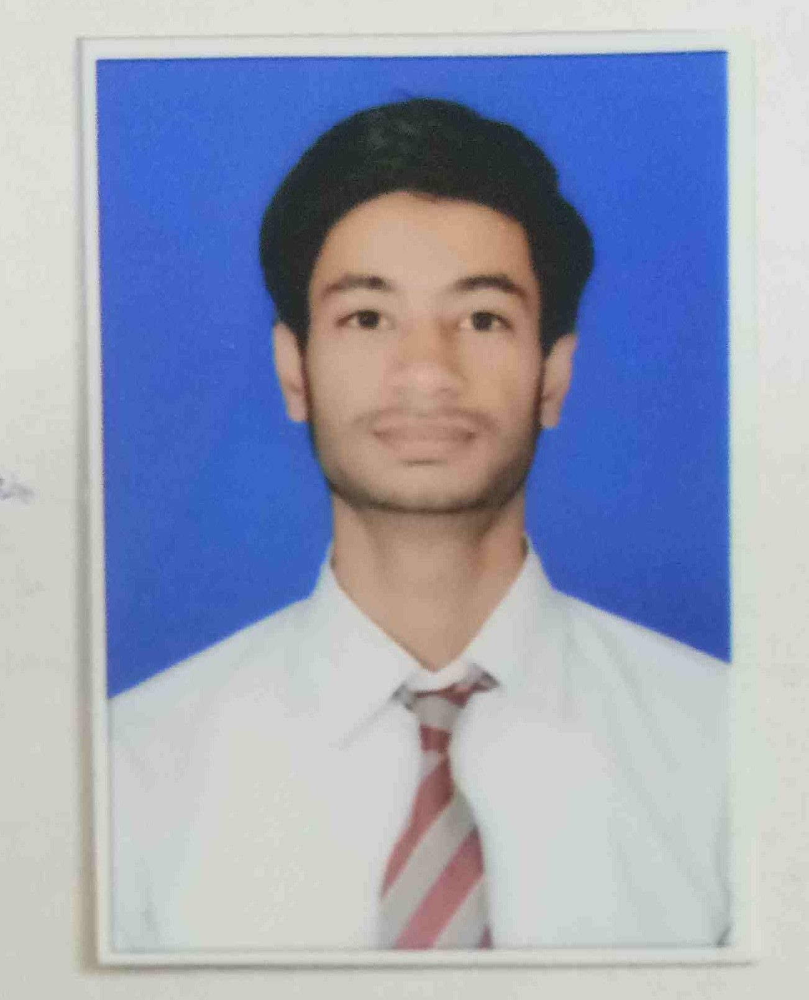

ABOUT MYSELF

Hey,I am Mohd Saarim Saifi currently living in Agra.
I am doing my B.tech in Raja Balwant Singh
Engineering Technical Campus Bichpuri,Agra.
I completed my Intermediate in Sumeet Rahul Goel
Memorial Senior Secondary School,Agra in 2020.
I completed my High School in Sumeet Rahul Goel
Memorial Senior Secondary School,Agra in 2018.
Education Details
| S.no |
Qualification |
Board/University |
School/College |
Percentage/Cgpa |
Year |
| 1 |
B.tech |
AKTU Lucknow |
Raja Balwant Singh Engineering Technical Campus Bichpuri,Agra |
XX |
pursuing (6th Semester) |
| 2 |
12th |
CBSE Board |
Sumeet Rahul Goel Memorial Senior Secondary School,Agra |
XX |
2020 |
| 3 |
10th |
CBSE Board |
Sumeet Rahul Goel Memorial Senior Secondary School,Agra |
XX |
2018 |
My hobbies are reading, Learning, play pc games,love online earning, Playing Chess.
My strengths are Honesty,
self-motivated,patience, and Hard work,Critical thinking.
My weakness is more talkative,feel uncomfortable
until i finish my work.